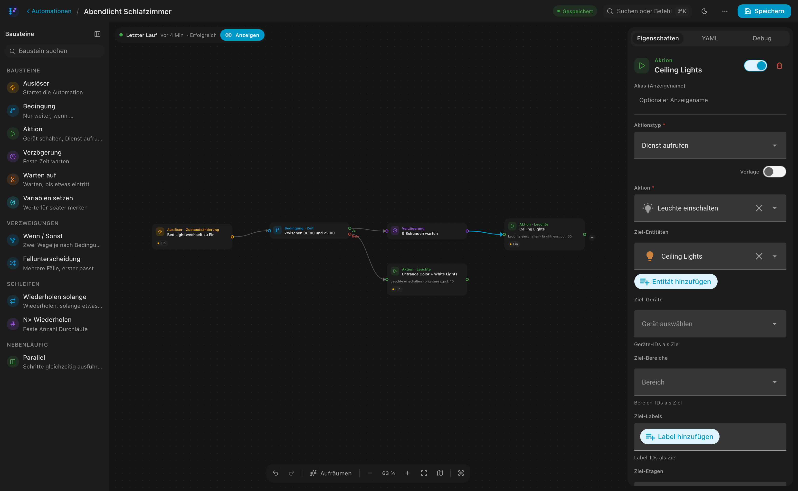
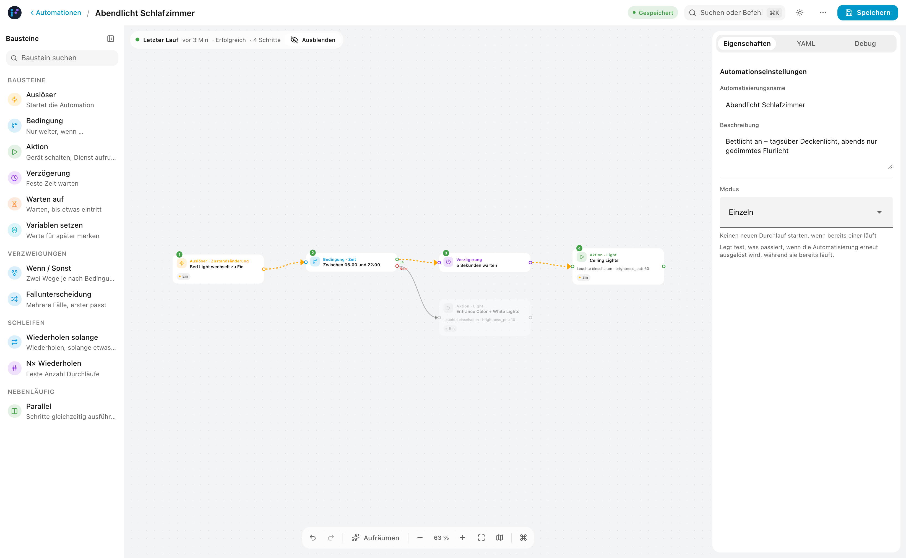

FLODE is a visual editor for Home Assistant automations. Connect triggers, conditions, and actions on a canvas — get clean, native YAML in return. No server. No lock-in.

The canvas
Drag nodes onto the canvas and connect them. FLODE lays complex branches out automatically, and follows your Home Assistant theme — light or dark — without any setup.

Under the hood
What you draw becomes standard Home Assistant automation YAML — stored directly in HA core. Nothing proprietary, nothing hidden, nothing to migrate away from later.
# Evening Light alias: Evening Light trigger: - platform: sun event: sunset condition: - condition: state entity_id: group.family state: not_home action: - service: light.turn_off target: entity_id: all
Features
Drag trigger, condition, and action nodes onto a canvas and connect them. Undo/redo, quick-add on connection drop, and a live YAML preview throughout.
Import an existing Home Assistant automation, edit it visually, and save it straight back — nothing is lost in the round trip.
State machines handle loops and branching automatically. Choose, If/Else, Repeat, and Parallel are draggable blocks — with full metadata and targeting by area, device, label, or floor.
See an actual automation run highlighted directly on the canvas — executed, skipped, and errored nodes, right in the diagram.
Native pickers and components throughout, with automatic light/dark theming and deep links that open a specific automation from any dashboard button.
Full German and English support, with a per-installation override.
Node types
Each node maps directly to a Home Assistant concept — nothing invented, nothing to relearn.
Installation
Prefer to install by hand? Download flode.zip from the
releases page and copy it to
config/custom_components/flode/.